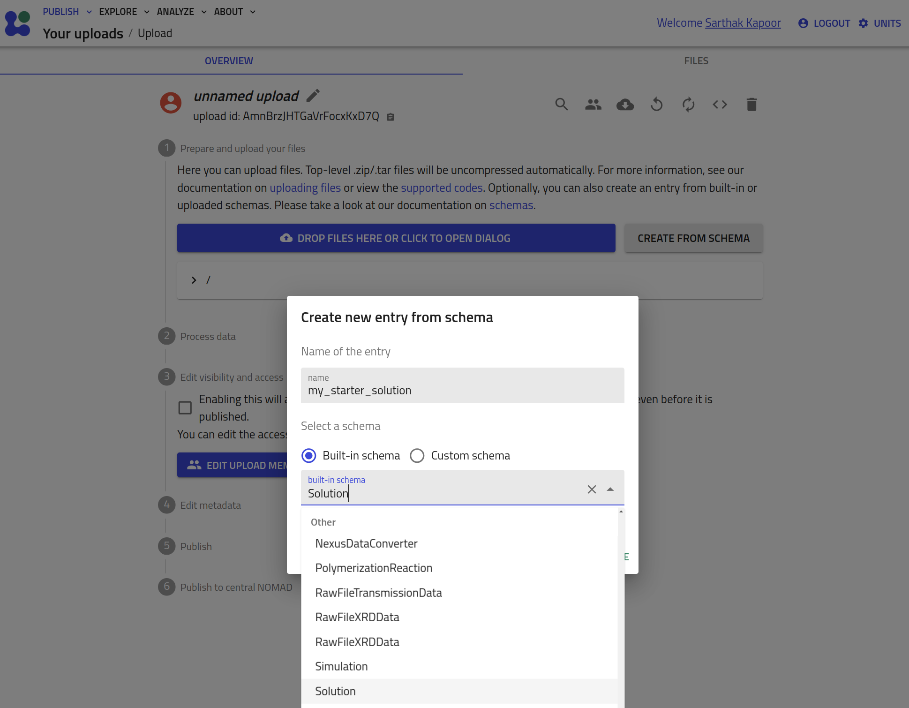
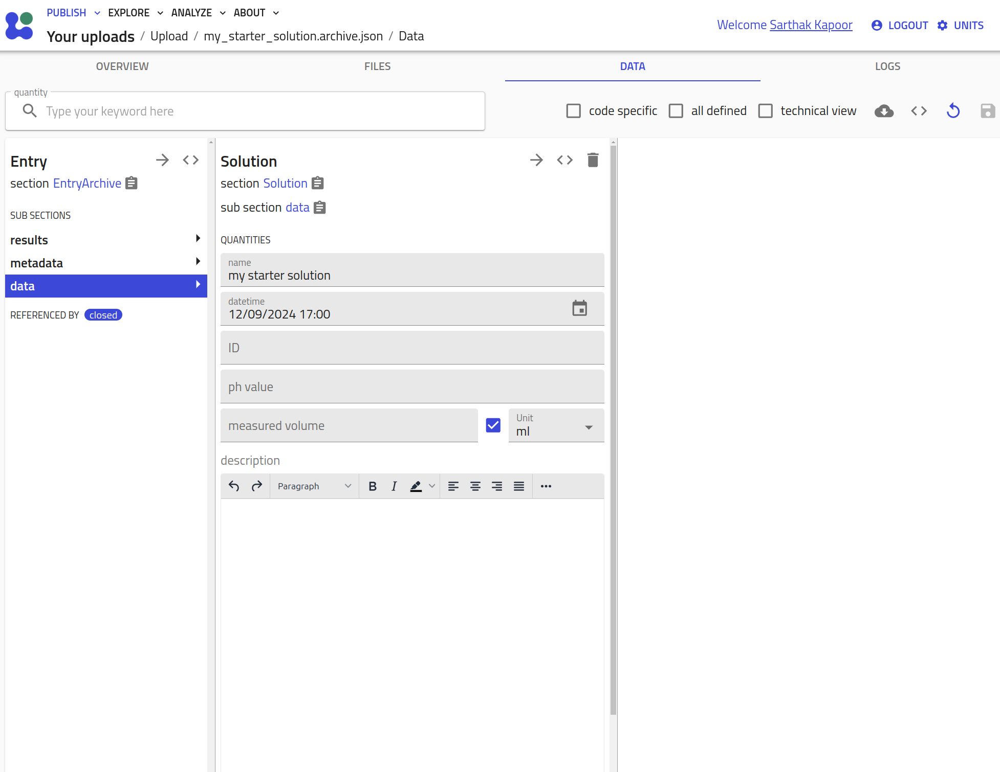

How to Use the NOMAD-material-processing Plugin¶
The NOMAD-material-processing plugin provides standardized schemas for common methods, processes, and instruments. These schemas are generalized to ensure they are not tied to any specific lab or setup, promoting interoperability across the materials science community. Users can inherit from these schemas, further specializing them to fit their specific needs, all while maintaining a consistent structure that benefits broader community use. For more details, see levels of schemas in NOMAD.
To use this plugin, you must have it installed on your NOMAD Oasis instance (please refer to the installation guide for instructions). Alternatively, you can explore the plugin’s functionality and make use of it on our centrally hosted Example Oasis.
This guide will walk you through the different ways to use the NOMAD-material-processing plugin:
- Without specialization: Instantiating NOMAD entries directly from the "built-in schemas".
- Inheriting and specializing: Using custom YAML schemas to adapt the existing schemas for your specific use case.
- Using Python schema plugins: Inheriting and specializing schemas with Python for advanced customization.
Using "Built-in Schemas"¶
In this section, we will demonstrate how to use the standard, built-in entry schemas provided by the plugin without any specialization. These schemas can be directly instantiated to create entries in a NOMAD Oasis.
- Start a new upload and click on the CREATE FROM SCHEMA button.
-
Select the schema from the drop-down menu, add the name for the entry, and hit CREATE.


Inheriting and Specializing Using Custom YAML Schemas¶
Here, we will guide you through how to extend and specialize the built-in schemas using custom YAML schemas. This approach allows you to tailor the schema to your specific requirements while still leveraging the standardized base sections provided by the plugin.
The schemas found in the plugin are general base sections and they go more and more specific in several techniques, however, they can be limiting in case of your own requirements.
Therefore, NOMAD provides a way of adding technique-specific behavior to the ELNs: YAML schemas - a config file containing schemas added to an NOMAD upload.
Using a SolutionPreparation example, we show how to specialize a class with a YAML schema.
Two quantities, namely initial_temperature and final_temperature are added to AddSolutionComponent class, and SolutionPreparation is customized with this new class in the steps subsection.
We use a custom YAML schema to define the following sections:
SolutionPreparationAddSolutionComponent
This leads to a specialization of the initial class:
definitions:
name: 'Solution customization'
sections:
MyAddSolutionComponent:
m_annotations:
eln:
properties:
order:
- 'name'
- 'start_time'
- 'duration'
- 'comment'
- 'solution_component'
base_sections:
- nomad_material_processing.solution.general.AddSolutionComponent
quantities:
initial_temperature:
type: np.float64
unit: celsius
description: "initial temperature set for ramp"
m_annotations:
eln:
component: NumberEditQuantity
defaultDisplayUnit: celsius
final_temperature:
type: np.float64
unit: celsius
description: "final temperature set for ramp"
m_annotations:
eln:
component: NumberEditQuantity
defaultDisplayUnit: celsius
MySolutionPreparation:
base_sections:
- nomad_material_processing.solution.general.Solution
- nomad.datamodel.data.EntryData
sub_sections:
steps:
repeats: True
section: '#/MyAddSolutionComponent'
You can learn in detail how to create your own YAML schemas in our previous tutorial 8 and tutorial 13. You can navigate in the tutorial 8 repository to see some other examples of YAML schemas that inherit and extend existing classes.
Inheriting and Specializing Using Python Schema Plugins¶
The most customizable way of using the sections defined in the nomad-material-processing
plugin is to extend the sections in another NOMAD schema plugin.
For a detailed tutorial on how to setup and develop a plugin we refer you to the tutorial on Developing a NOMAD Plugin.
Once your plugin is setup you can include the required nomad-material-processing version
as a dependency in your pyproject.toml:
In your schema packages you can then import the desired section definitions and specialize them to your need by adding any additional quantities or subsections that you require:
from nomad_material_processing.vapor_deposition.pvd.thermal import (
ThermalEvaporation,
ThermalEvaporationStep,
)
from nomad.metainfo import Quantity
class MyThermalEvaporationStep(ThermalEvaporationStep):
my_additional_quantity = Quantity(
type=str,
description='My additional string quantity`
)
class MyThermalEvaporation(ThermalEvaporation):
steps = SubSection(
description="""
Specialized steps of my thermal evaporation process.
""",
section_def=MyThermalEvaporationStep,
repeats=True,
)
By using existing subsection names (see steps in the example above) you can specialize
the subsections. Please keep in mind that the specialized subsection should always
inherit the original one. In the example above the step subsection used to be of type
ThermalEvaporation but we specialized it to MyThermalEvaporation step but made sure
that this section inherits ThermalEvaporation. By doing this we ensure the
polymorphism and that we
will always find steps of (sub)type ThermalEvaporationStep in a ThermalEvaporation.